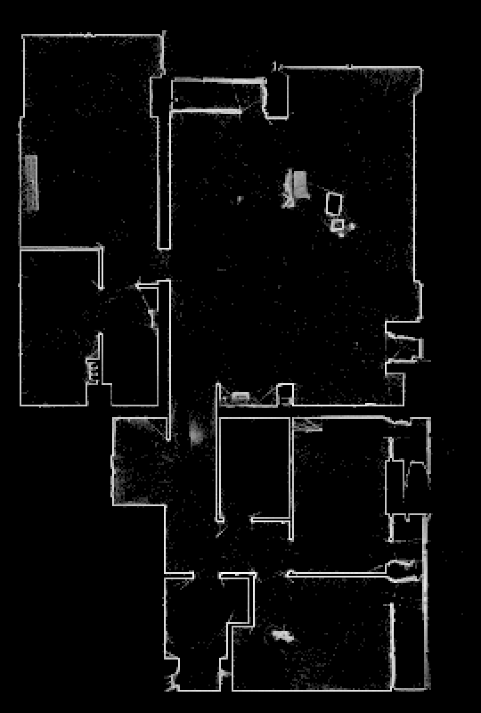
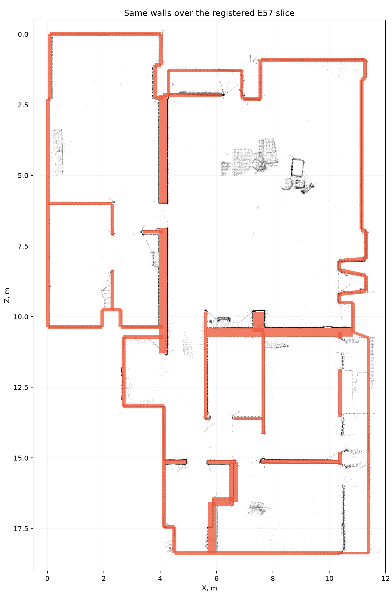
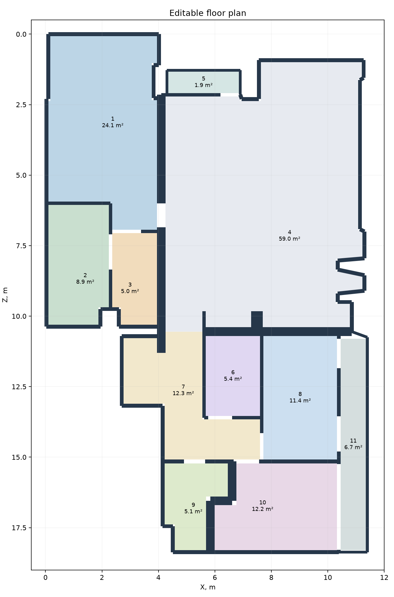
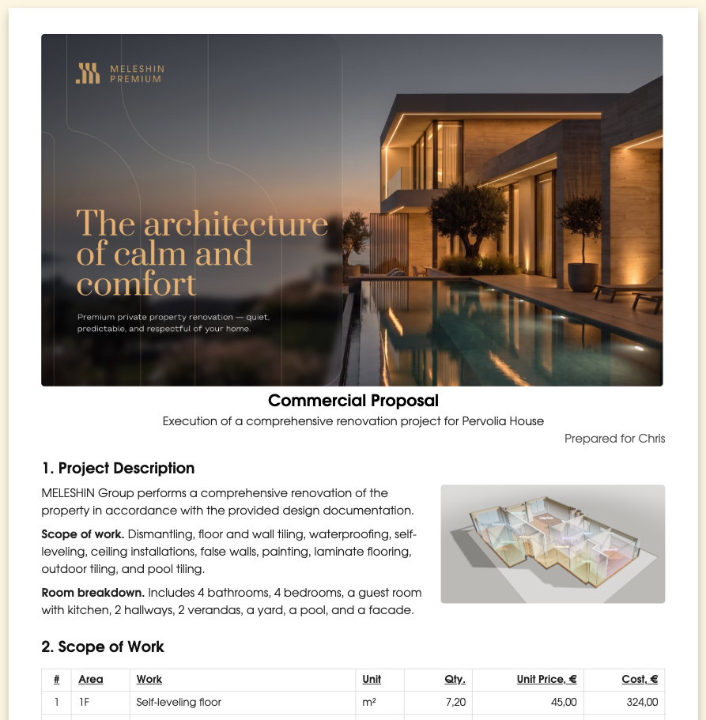

Персонализированная презентация проекта отделки.
Для сервис-провайдера по отделке: из скана квартиры — план, обмеры, модель и основа коммерческого предложения для клиента.
Изучить кейсКачество услуги начинается до начала работ.
Клиент запрашивает отделку. Сервис-провайдеру предстоит предложить решение — даже если подробного дизайн-проекта ещё нет.
Важно не только хорошо выполнить работу, но и оперативно ответить, разобраться в деталях и не перекладывать на клиента лишние расходы. Для этого исходные данные, расчёт и презентация должны работать как единый процесс.
Запрос
Клиент описывает задачу и ожидаемый результат в свободной форме.
Квалификация
Сервис-провайдер оценивает проект и решает, берёт ли его в работу.
Подготовка
Уточняем данные объекта, дешифруем скан и связываем обмеры с работами.
Презентация
Представляем клиенту объём работ, расчёт и условия сотрудничества.
От облака точек
к плану объекта.
Компактный лидар помогает получить основу для расчёта без дополнительной финансовой нагрузки на клиента.
Дешифрация связывает скан с геометрией объекта: от среза и выделения стен к границам помещений, площадям и периметрам. Точность этого перехода влияет на оценку стоимости работ.

Множество точек фиксирует существующее пространство, включая стены и предметы.

В данных распознаются стены и проёмы; их контуры сопоставляются со сканом.

Из очищенных границ получаем помещения и их площади — основу для следующих расчётов.
Сканирование не отменяет выезд на объект и личное обследование мастером. Оно помогает сократить время подготовки до заключения контракта.
Модель помогает говорить об одном и том же.
Визуальная модель связывает строки расчёта с пространством квартиры. Клиент видит, к чему относится предложение; команда работает с общей картиной объекта.
Данные.
Модель.
Диалог.
Один массив данных можно представить по-разному для клиента, менеджера, комплектатора и подрядчика.
Каждое помещение — часть общей картины.
Площади и периметры становятся основой для количества работ. Ниже — фрагмент экспликации из кейса.
Фрагмент исходной экспликации · площадь пола
Предложение, в котором видна работа.
Модель, обмеры, перечень работ и план становятся основой персонального предложения. Детали показывают вовлечённость, а скорость ответа — заинтересованность в сотрудничестве.

От исходных данных к предметному разговору.
Связанные данные помогают объяснить объём работ и условия. Более ясная основа для расчёта позволяет обоснованнее оценивать резерв и снижать риск неожиданных изменений стоимости, не завышая цену без необходимости.
Это пример подхода к подготовке предложения, а не окончательная смета: состав и стоимость работ уточняются для конкретного объекта.
Работы во времени.
Девять этапов с датами начала и окончания помогают увидеть последовательность работ. Даты приведены как пример из кейса.
Листайте вправо, чтобы увидеть даты
Хорошая работа начинается с хорошо устроенного процесса.
Для клиента
Быстрая обратная связь, понятное предложение и внимание к расходам ещё до начала работ.
Для сервис-провайдера
Связь исходных данных с объёмом работ, расчётом и презентацией помогает предметно обсудить решение.
Для отношений
Детальная и наглядная коммуникация показывает, как команда погрузилась в объект.
Выстраиваю процессы, которые соединяют продукт, финансы и презентацию.
Помогаю клиентам проектировать и отстраивать пайплайны: от исходной задачи и данных до решения, расчёта и понятной коммуникации. Использую инструменты, включая AI, там, где они помогают делу. Этот кейс посвящён одному участку такого процесса — продаже услуги по отделке.
Напишите, какой процесс или задачу хотите разобрать. Помогу разобраться в процессе и наметить решение для вашей команды.
Все кейсы